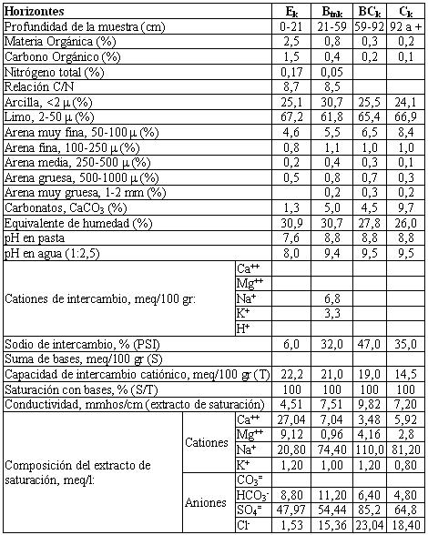

Natracualf típico, limosa fina, mixta, térmica
Capacidad de uso: VIws
Los suelos de esta Serie son imperfectamente drenados, desarrollados a partir de materiales franco limosos, vinculados a sectores deprimidos y antiguos cursos (paleocauces) del Río Segundo. El horizonte superficial está lixiviado y decolorado (E), presenta evidencias de falta de aireación periódica por saturación del suelo con agua. La estructura es débil y los agregados inestables. A partir de los 21 cm se encuentra un horizonte enriquecido en arcilla (Btk) de textura franco arcillo limosa y estructura en bloques con abundantes barnices en la cara de los agregados. Esta capa es muy poco permeable, constituyéndose en un impedimento para el pasaje del agua a través del perfil. Gradualmente se pasa al material originario (horizonte Ck), que se encuentra a 92 cm de profundidad. El perfil presenta salinidad débil desde superficie hasta los 59 cm en que la misma ya es moderada. El tenor de sodio supera el 32% de los cationes de intercambio a partir de los 21 cm. El carbonato se encuentra en forma pulverulenta y en concreciones desde la superficie, incrementándose su tenor con la profundidad hasta llegar a valores de 9,68% en el horizonte Ck. Estos suelos están sujetos a anegamientos frecuentes y el agua es eliminada del perfil muy lentamente por percolación o evapotranspiración ya que, por la posición que ocupan en el paisaje, el avenamiento superficial (escurrimiento) es inadecuado. Por lo general, estos suelos son dedicados a pasturas (normalmente a pastos naturales), ya que no son aptos para ninguno de los cultivos comunes de la zona.
Descripción del perfil típico:
El perfil que representa el modal de la Serie Impira fue descrito a 6,6 Km al ESE de la localidad de Impira, departamento Río Segundo, provincia de Córdoba.
Ek 0-21 cm; color en húmedo pardo oscuro (10YR3/3); franco limoso; estructura en bloques subangulares medios débiles con tendencia a masivo; friable en húmedo; no plástico; no adhesivo; moderado contenido de carbonatos en la masa del suelo; escasas concreciones de carbonato de calcio finas; límite inferior abrupto, suave.
Btnk 21-59 cm; color en húmedo pardo oscuro (7,5YR3/2); franco arcillo limoso; estructura en bloques subangulares medios moderados; friable en húmedo; ligeramente plástico; ligeramente adhesivo; moderado contenido de carbonato pulverulento en la masa del suelo; abundantes concreciones de carbonato de calcio finas; abundantes barnices húmicos arcillosos finos; moteados abundantes, finos y precisos; lixiviado; límite inferior gradual, suave.
BCk 59-92 cm; color en húmedo pardo a pardo oscuro (7,5YR4/2); franco limoso; estructura en bloques subangulares medios moderados; friable en húmedo; ligeramente plástico; ligeramente adhesivo; abundante carbonato pulverulento en la masa del suelo; escasas concreciones de carbonato de calcio finas; escasos barnices arcillosos finos; moteados abundantes, finos y precisos; manchas de materia orgánica; límite inferior gradual, suave.
Ck 92 cm a +; color en húmedo pardo claro (7,5YR6/4); franco limoso; masivo; muy friable en húmedo; no plástico; no adhesivo; abundante contenido de carbonato pulverulento en la masa del suelo; moteados abundantes, finos y precisos.
Cuadro Nº17
Datos analíticos Serie IMPIRA
Situación: Latitud: 31°47’48”S Longitud: 63º35’27”O Altitud: 255 m.s.n.m.

|